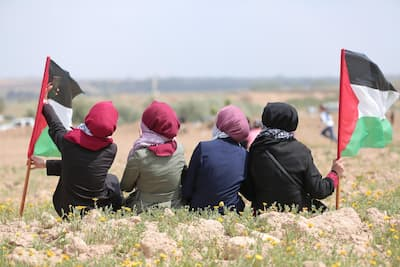
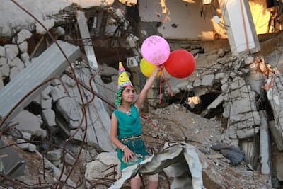

Introduktion
Velkommen til For Palæstinenser Og Palæstina. Dette er en informativ hjemmeside om Palæstina, hvor du kan lære om historien, følge de nyeste opdateringer og finde information om kommende demonstrationer og initiativer. Sitet samler viden, aktuelle begivenheder og ressourcer ét sted, så du nemt kan holde dig opdateret og engagere dig på en oplyst måde.
Nyeste updateringer
To palæstinensere dræbt af ulovlige bosættere nær Nablus, mens Al-Aqsa forbliver lukket.

Israelske styrker fortsætter med at stramme de militære restriktioner på tværs af Vestbredden.
